Git 误操作如何将改动撤销？
上一篇我们介绍了团队工作的github flow 流程，文中主要介绍了主流程，对于开发人员主流程的提交每天都会高频去做，熟练于心。但是在主流程操作中产生失误，遇到的情况相比主流程频率很低很多，对于这些低频失误，相信可能大部分人第一时间会去 Google，寻求解决方案。因此，本文对大家在 Git 使用中遇到的常见的误操作问题做总结归纳，并提供救命建议。
笔者本来打算在一篇文章中介绍全基本的误操作解决方式，但奈何每一种方式都扩充较多，为了让大家更理解，本篇只着重讲解两个方面的误操作。后续的其他方面的解决方式会以连载的方式分享给大家。
本篇介绍的误操作类型主要有以下两个方面：
- commit - 分支提交错误
- reset - 误删代码
分支提交错误
有时我们会遇到这种情况：我们从develop 分支新建一个名为feat/home 分支去做A功能，然后由于一些其他原因A 功能需要延后，然后我们新建一个分支去做B功能或者C功能，在多分支多功能开发时，就容易出现做B任务时，忘记切换分支，一直等做完了提交了push之后才发现 push 错了远端的分支，并且 push 的改动与该分支需要开发的功能并没有交集，因此我们需要将已经提交错的分支内容回滚并提交push 到正确的远端分支：
此时有两种情况：
【记得扩充索引和工作目录】
场景1：已经commit，但是未push到远端
使用 git reset 命令，可以在提交层面在私有分支舍弃一些没有提交的更改：
git reset --hard HEAD^ // 回退到上一个版本
git reset 命令主要有三个选项： --soft、--mixed 、--hard。默认参数为 --mixed
git reset --soft 提交：
--soft 会将 HEAD 指向引用给定提交。索引和工作目录内容保持不变。这个版本的命令有”最小“影响，只改变一个符号引用的状态使其指向一个新提交，不会改变其索引①和工作目录②
具体体现如下：
git add 1.js && git commit -m "update part 1"
git add 2.js && git commit -m "update part 2"
git add 3.js && git commit -m "update part 3"
git add 4.js && git commit -m "update part 4"
git log --oneline --graph -4 --decorate
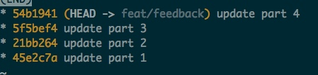
git reset --soft HEAD~1
当我们执行--soft 命令时，可以看到控制台无任何输出，此时查看当前提交历史
git log --oneline --graph -4 --decorate
如下图，可以看到版本库已经回退了一个版本：
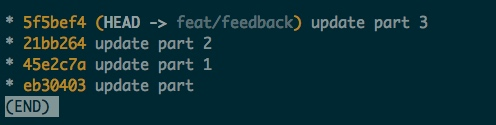
执行 git status，可以看到SHA1为54b1941 的commit 上的更改回到了缓存区：
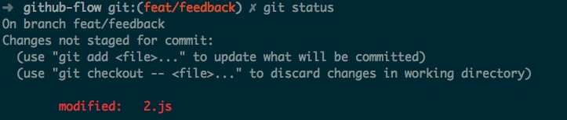
因此我们可以 --soft 操作是软重置，只撤销了git commit操作，保留了 git add 操作。
git reset --hard 提交
此时接上面的流程，我们再次执行 --hard 操作，这次尝试回退两个版本：
git reset --hard HEAD~2
如下图，可以看到版本库回退了两个版本，并且将本地版本库的头指针全部重置到了指定版本，暂存区也会被重置，工作区的代码也回退到了这一版本：
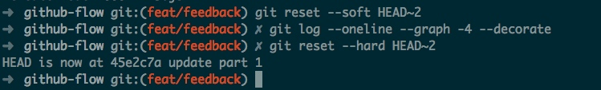
执行git status 可以看到 我们的 “54b1941” commit 上做的修改都"丢失"了，新的文件也被删除了。
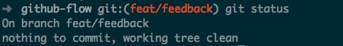
因此可以知道，git commit --hard 是具有破坏性，是很危险的操作，它很容易导致数据丢失，如果我们真的进行了该操作想要找回丢失的数据，那么此时可以使用git reflog 命令救命。这个命令的具体使用会在文章后面介绍。
git reset --mixed 提交：
我们重新造一系列 commit 历史：
git add 1.js && git commit -m "update 1.js"
git add 2.js && git commit -m "update 2.js"
git add 3.js && git commit -m "update 3.js"
git add 4.js && git commit -m "update 4.js"
git add 5.js && git commit -m "update 5.js"
git log --oneline --graph -4 --decorate
可以看到当前的 commit 历史如下：
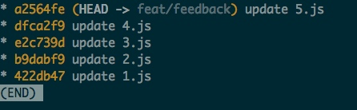
此时执行--mixed 操作，尝试回退两个版本：
# 等价于 git reset HEAD~2
git reset --mixed HEAD~2
提交历史此时改变为下图所示：
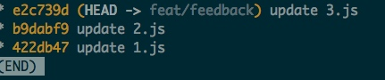
此时执行 git status ，命令行输出如下：
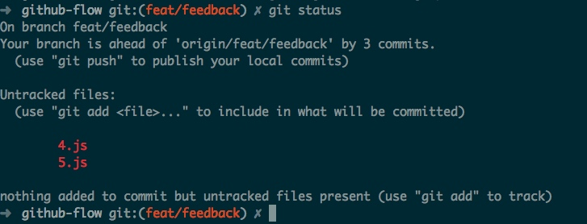
SourceTree 工具上的直观显示如下：
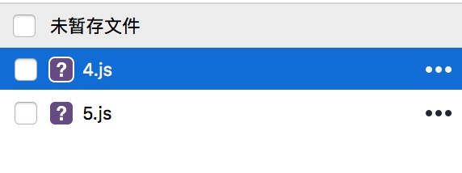
可以看出，该命令加上 --mixed 参数会保留提交的源码改动，只是将索引信息回退到了某一个版本，如果还需要继续提交，再次执行 git add 和 git commit
介绍完git reset，那么我们来说一下如何用该命令解决提交分支错误的问题：
第一种方法：
适用于多个分支一起开发的时候将A分支的改动提交到B的场景：
# 将该分支的本不应该提交的commit撤销
git reset HEAD^
# 按需选择想要回到哪个版本
# 回到HEAD
git reset --soft HEAD
# 回到HEAD的前一个版本
git reset --soft HEAD^
# 回到HEAD的前10个版本
git reset --soft HEAD~5
# 利用id回到指定版本
git reset --soft a06ef2f
# 将撤销的代码暂存起来
git stash
# 切换到正确的分支
git checkout feat/xxx
# 重新应用缓存
git stash pop
# 在正确的分支进行提交操作
git add . && git commit -m "update xxxx"
第二种方法：
适用于在不小心在master 分支上提交了代码，而实际想要在feature 分支上提交代码的场景：
# 新检出一个新分支，但是仍在master 分支上，并不会切换到新分支
git branch feat/update
# 恢复master本身提交的状态
git reset --hard origin/master
# 提交错的代码已经在新检出的分支上面了，可以继续进行开发或者push
git checkout feat/update
第三种方法：
- 适用于想要对特定的某一个或几个commit 进行“嫁接”，使其复制一份到正确的feature 分支的场景；
- 在功能性迭代开发中发现一个bug，并提交了一个commit 进行修复，但是发现该bug也存在线上的发布版本上，必须要尽快对线上进行修复，此时可以使用
git cherry-pick来将bug 修复的commit 嫁接到 fix 分支上进行代码修复，并及时发布，解决线上bug的场景。
# 先切换到正确的分支
git checkout feat/update
# 取出提交错误的或bug fix的 commit 引入到feat/update 分支中
git cherry-pick a06ef2f
# 回到错误的分支
git checkout feat/feedback
# 将 a06ef2f 的改动从当前分支销毁
git reset --head a06ef2f
上面演示的是“嫁接” 一个commit，如果想要嫁接多个commit可以这样做：
# 将三个commit 合并过来
git cherry-pick b9dabf9 e2c739d dad9e51
如果想加个一个应用范围内的commit，可以这样做：
git cherry-pick 422db47..e2c739d
需要主要的是无论是对单个 commit 进行 git cherry-pick ，还是批量处理，注意一定要根据时间线，依照 commit 的先后顺序来处理。
如果你只想把改动转移到目标分支，但是并不想提交，可以这样做：
# 嫁接过来的改动不会提交，只会放在暂存区
git cherry-pick b9dabf9 --no-commit
第四种方法：
适用于当多个文件被缓存时，发现其中一个文件是其他分支的功能性改动，想直接取消该文件的缓存：
# 编辑了 1.js 2.js 3.js
# 缓存所有改动的文件
git add .
# 发现 3.js 不应该出现在此时提交的功能上，要取消它的缓存
git reset 3.js
# 此时3.js 被取消了缓存，我们继续提交1.js 2.js
git commit -m "Update 1.js 2.js"
# 将3.js 暂存起来
git stash
# 切换到提交 3.js 改动的分支
git checkout feat/update
# 重新应用缓存起来的 stash（3.js）
#pop 参数会将缓存栈的第一个stash删除，并将对应修改应用到当前分支目录下
git stash pop
# 继续提交
git add && git commit -m "update 3.js"
场景2：Commit之后已经 push 到了远端
此时我们需要借助 git revert 命令来撤销我们的操作
场景：假设我们在feat/feedback 分支上发现最后一次commit的功能是feat/update 分支的改动，此时想要取消这次commit（update 2.js）
下图是feat/feedback 的提交历史：
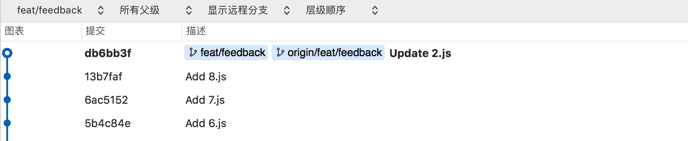
解决方式：
# 撤销最近的一次提交
git revert HEAD --no-edit
接着我们使用sourceTree ④查看撤销之后的提交历史：
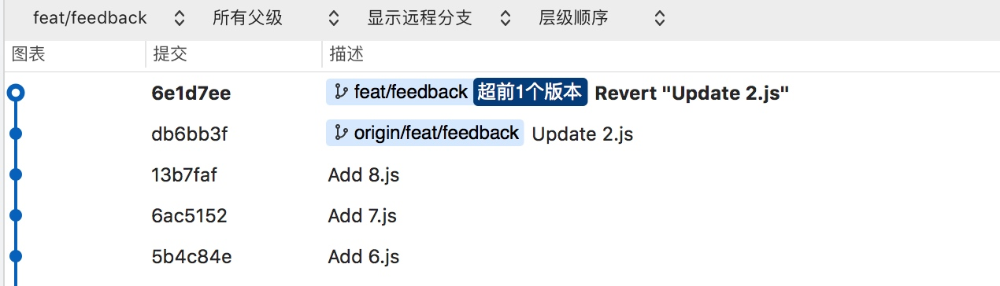
我们看到想要撤销的commit（Update 2.js）记录还在，并且多了一个新的commit（Revert "Update 2.js"），因此可以看出，git revert 是对给定的commit提交进行逆过程，该命令会引入一个新的提交来的小给定提交的影响。
和 git cherry-pick 一样，revert命令不修改版本库的现存历史记录，相反它只会在记录添加新的提交
接下来我们已经解决了错误分支的提交，但是还要把这次提交放到正确的分支上，依然可以使用git cherry pick 去操作：
# 将revert commit push到远端
git push origin feat/feedback
# 切换到正确的分支
git checkout feat/update
将目标commit 嫁接到当前分支
git cherry pick db6bb3f
git revert 后面可以加不同的参数达到不同的撤销效果，常用的如下：
--edit ：该参数为git revert 的默认参数，它会自动创建提交日志提醒，此时会弹出编辑器会话，可以在里面修改提交消息，然后再提交。
git revert 6ac5152
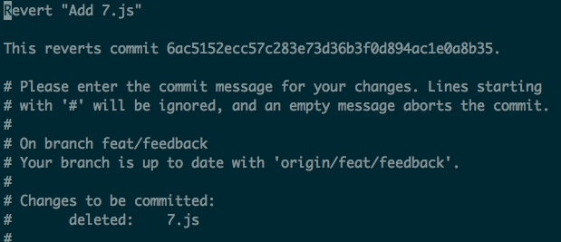
--no-edit ：表示不編輯 Commit 訊息，revert的commit 会直接自动变回 Revert + 想要撤销的commit 的message 的格式。上面例子中使用的就是这种方式。
--no-commit：该命令会使撤销的commit 里面的改动放到暂存区，不进行提交，用户可以自行再次提交。这种参数并且适用于将多个commit 结果还原到索引中，集体放置在缓冲区，进行用户自定义的操作。
git revert 13b7faf --no-commit
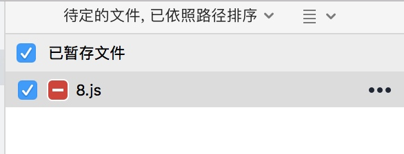
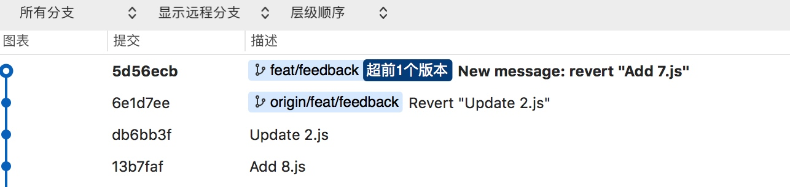
场景3：改动不仅已经 push 到远端，并且已经合到主仓库
当我们把本不属于该分支的代码或者不需要提交的改动提交到主仓库，并合并到了develop 仓库之后，解决方式如下：
以pull request 的方式进行的合并
在团队的github flow 流程中，若我们把问题分支的pull request 请求通过并合并到develop 之后，我们可以看到在 open pull request 页面有如下提示：
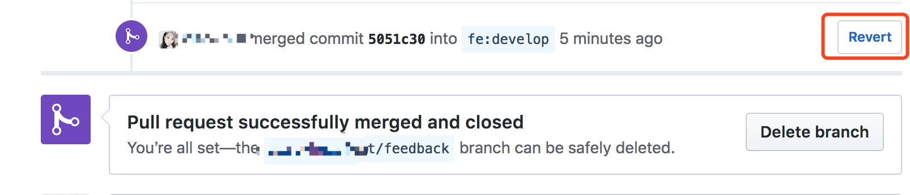
这时我们可以直接点击 【Revert】按钮进行撤回。该撤回操作会提示你需要创建一个 revert pull request，格式默认为： revert-${问题pr号}-${问题分支}
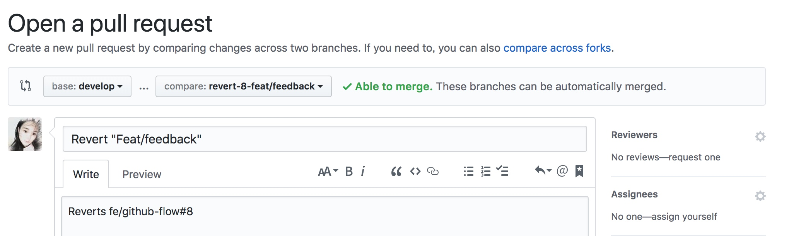
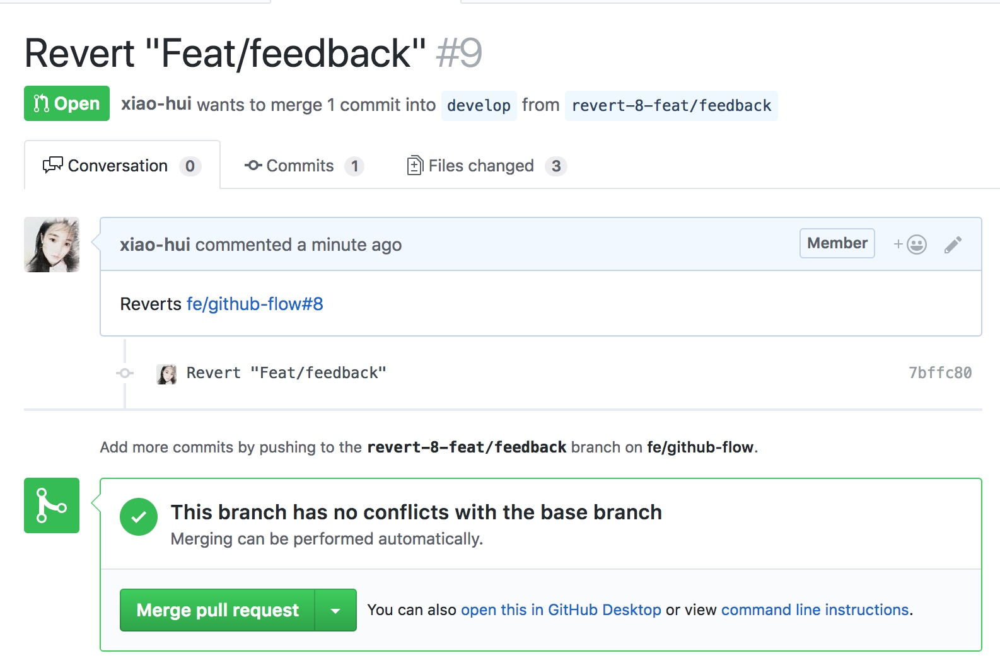
最后我们将revert 产生的pull request 合并到develop 分支。
因此对于团队协作中，推荐的工作流程是如上图所示在一个新分支中恢复错误的提交。在这里有人会问，为什么不直接在 develop 分支进行 git revert 操作，岂不是更方便？
这么做的原因是：在拥有大量开发人员的团队中， develop、master 分支为保护分支，为了安全不允许或建议去直接修改。
通过这次操作我们可以了解到：revert 分支的操作实际上是合并进develop 分支的逆操作，它会新产生一个新的分支，将 feat/feedback 的改动还原。
在团队协作流程中，通常我们会使用 Github 的【Merge pull request】 绿色按钮进行合并pull request 的操作，因为这样会更简单直观，建议始终使用该绿色按钮进行操作。
命令行合并
上面展示了通过界面按钮去操作如何撤销已经合并develop 分支的改动，那么在个人项目中用命令行操作是怎么样的呢？
# 添加三个文件
echo 1 > 1.html
echo 2 > 2.html
echo 3 > 3.html
# 以为提交的是1.html 2.html，将改动推到了远端分支
git add . && git commit -m "Add 1.html 2.html"
git push origin feat/update
# 将feat/update的改动创建一个“合并提交”合入develop 分支，生成的 Merge commit 的SHA1 为 f439c6f
git checkout develop
git merge feat/update --no-ff
# 如果存在冲突，先解决冲突，然后继续请求合并
git add . && git merge --continue
# 将develop 合并的最后结果提交到远端
git push origin develop
# 合并之后发现不应该将3.html 不应该放入功能迭代中。需要撤销本次合并
# 做任何操作前，先保证本地的develop 代码是最新状态
git pull --rebase origin develop
# 从develop分支新建一个 revert 分支
git checkout -b revert-feat/update
# 用 -m 参数指定父编号（从1开始），因为它是“合并提交⑤”
git revert -m 1 f439c6f
# push revert 的改动
git push origin revert-feat/update
# 切换回 develop 分支，将 revert-feat/update 分支进行合并
git checkout develop
git merge revert-feat/update --no-ff
git push origin develop
图为新建revert 分支：
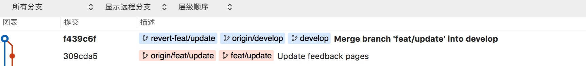
图为git revert 弹出编辑器编辑 revert commit message 过程：
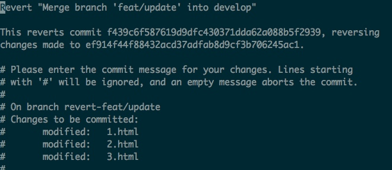
图为执行完git revert 之后的 commit 历史记录：
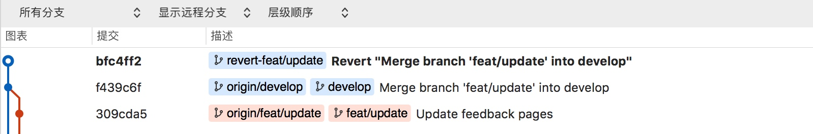
接下来我们想将3.html 的改动撤销的操作就变成了上面场景 2 的操作流程了。
场景4 revert 错误，需要再次补救
当我们的代码合到主仓库，并且成功发布到生产环境，此时发现线上有集中报错，必须马上将线上代码回滚到最新版本。这是我们需要进行revert 操作。revert 的代码发布到生产之后，发现错误仍旧存在，最后排查到是某个外部服务依赖出现问题，本次revert 的改动无关，并且外部服务已经恢复。此时需要将 revert 的改动再次发布上生产环境。
我们可以再用一次git revert，revert 掉我们之前的 revert commit：
git revert HEAD --no-edit
这样 revert 撤销的改动又回来了，此时会发现提交历史上又会出现一个新的revert commit。
误删代码
介绍上面提交错误 commit的时候，我们提到了git reset --hard。
如果我们真的使用了git reset --hard 之后，发现某些修改还有必要的，这时候就需要借助时光机 git reflog 了
git reflog 是非常好用的“后悔药”，它几乎可以恢复我们commit 过的改动，即使这条 commit 记录已经被我们 reset 掉了。
具体演示如下：
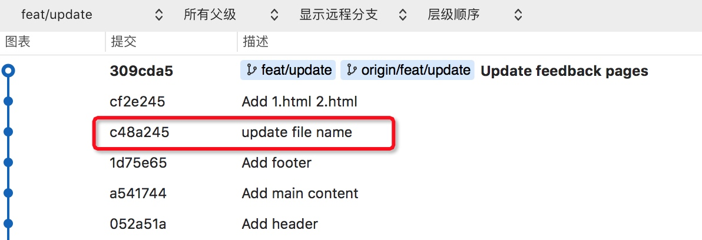
如上图，在当前提交历史中，我们想回到 SHA1 为 c48a245 这个commit：
# 回到 c48a245 commit
git reset --hard c48a245
此时提交历史变为现在这样：
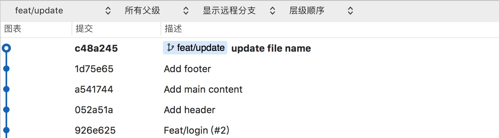
此时可以看到SHA1 为c48a245 的 commit 时间线之后的改动都已经被撤销了。
这时候我们突然想到：commit 信息为 “Add 1.html 2.html” 的提交里面的改动很重要，需要被找回，但是我们使用 git log 已经找不到这条被我们reset 掉的历史记录了。这时候进行如下操作：
git reflog
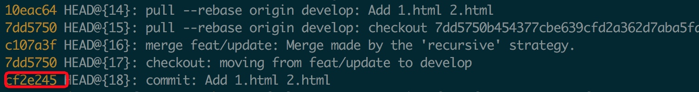
我们看到了曾经提交过的这个想要找回的commit（commit: Add 1.html 2.html），它的 SHA1 为 cf2e245
接下来怎么做取决于你具体想要达到什么目的：
- 想要回到
cf2e245这个特定的commit：
git reset --hard cf2e245
- 想要暂存
cf2e245中的改动，并且不想马上提交：
git reset --soft cf2e245
- 想要把
cf2e245嫁接到某个分支目录下：
git checkout feat/xxx
git cherry-pick cf2e245
- 想要找回
cf2e245某个文件的改动，暂存起来：
git checkout cf2e245 1.html
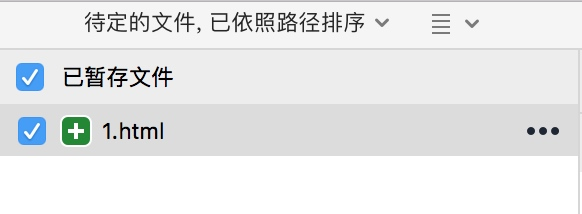
对于 git reflog 需要注意的是： 它不是万能的。Git 会定期清理那些你已经不再用到的”对象“，如果你想找到几个月以前的提交，可能会指望不上它。
写在后面
上面由于篇幅原因只总结了两种撤销操作，后续还会总结归纳一些网络上大家咨询最多的错误的解决方式。
文中的一些想法都是笔者工作学习过程中的思考和一点小小的总结。笔者认为技术某些名词翻译过来可能会有些许词不达意，因此文中某些操作词并没有直接翻译成中文，而是直接以英文形式存在，如果对其中的命令有疑问的同学，可以利用搜索引擎去了解更多。如有错误，欢迎指正！
一些名词注解：
① 索引：
Git索引是一个在你的工作目录和项目仓库间的暂存区(staging area)。有了它， 你可以把许多内容的修改一起提交（commit）。 如果你创建了一个提交（commit），那么提交的是当前索引（index）里的内容，而不是工作目录中的内容。
② 工作目录：
Git工作目录存储着你现在签出(checkout)来用来编辑的文件. 当你在项目的不同分支间切换时， 工作目录里的文件经常会被替换和删除。 所有历史信息都保存在 'Git目录'中； 工作目录只用来临时保存签出（checkout） 文件的地方， 你可以编辑工作目录的文件直到下次提交（commit）为止。